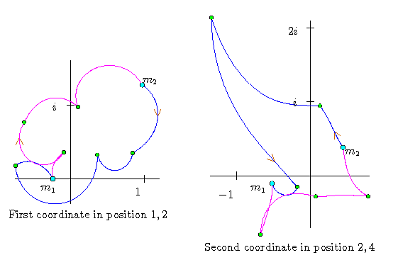

Loops
Loops
|
For the Schubert problem of four lines, our best choice of local coordinates
has just two coordinates.
Here, we display the path that each coordinate traces during a four-step
loop we generated.
Here again, we see that the Galois group is the full symmetric group S2. |
 |